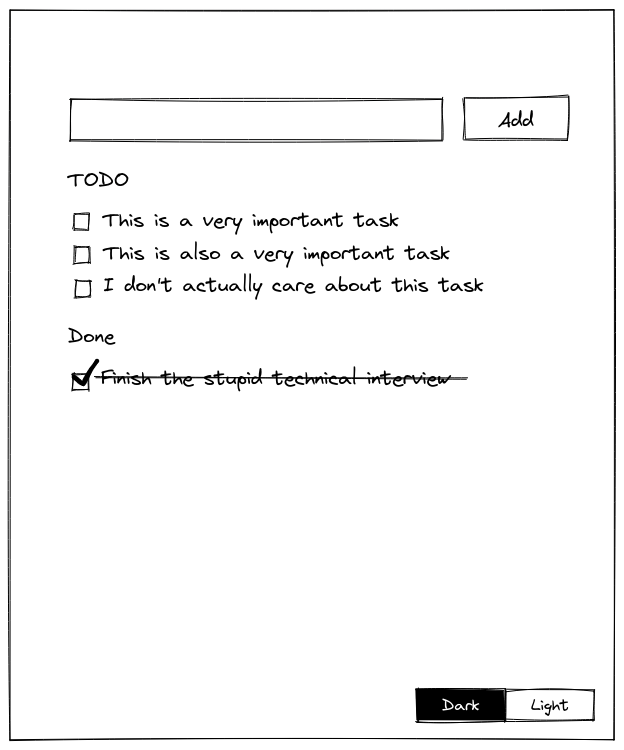

Junior Frontend Tests - TODO App
For this test you will be creating a simple TODO app (yes, another one). This is the basic mockup:

Requirements
- Use whatever frontend technology your prefer (React, Vue, Svelte...). Plain HTML, CSS and Javascript is fine too.
- Writing in the text input and clicking "Add" should add new tasks at the top of the list under the TODO section.
- Clicking on the checkbox in the TODO tasks should move the task to the "Done" list at the bottom of the list.
- Clicking "Add" when the input is empty should not add anything to the lists.
- The app should not allow to add tasks longer than 180 characters.
- Reloading the page should not delete the tasks.
- Clicking the "Dark" button should set a black background and white text on the page.
- Clicking the "Light" button should set a white background and black text on the page.
Notes
Please keep in mind that we will add a new feature during the test review. Also, do not worry too much about the css styling, as long as the layout is similar to the mockup it's fine, we'll also be adding a bit of styling during the review.
Good luck!